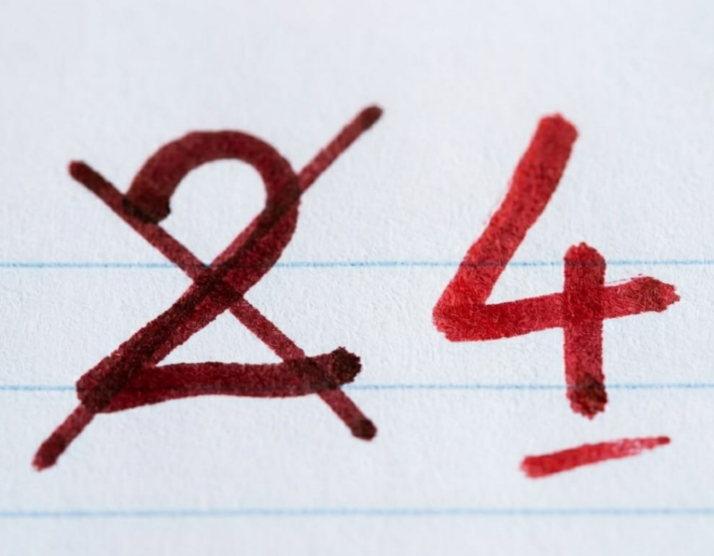
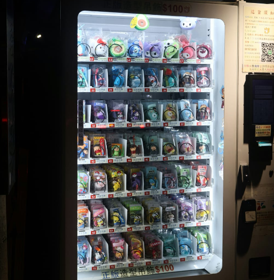
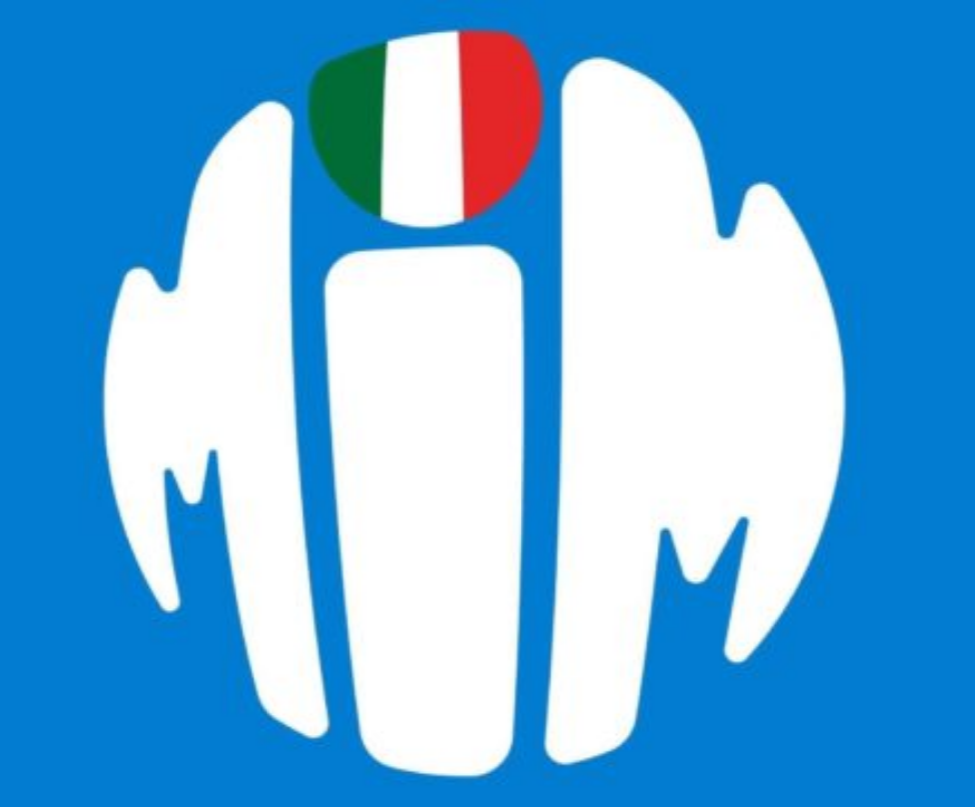
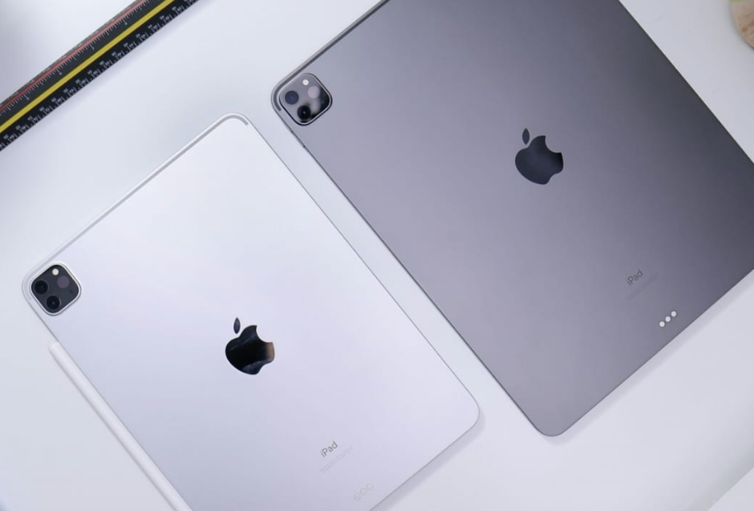
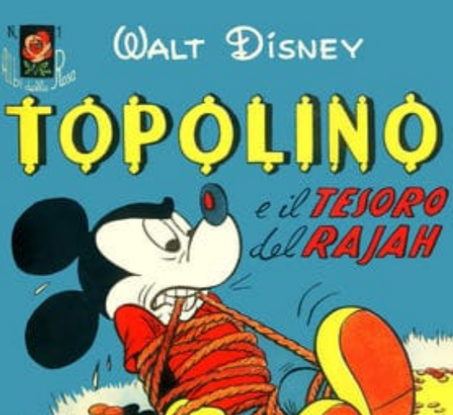
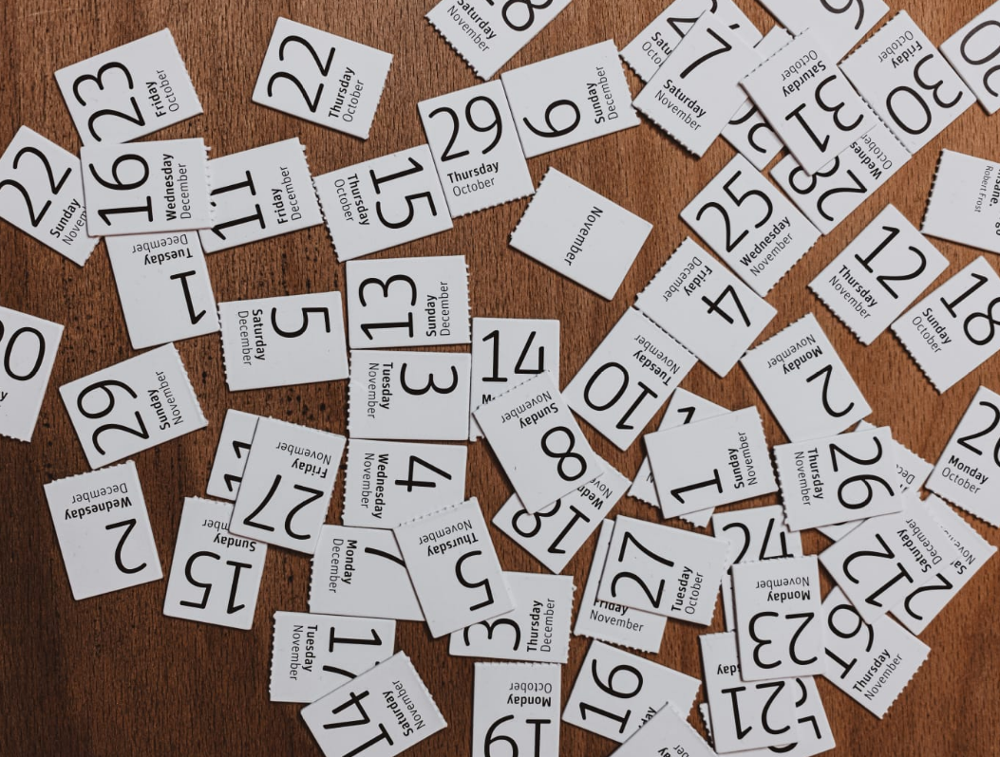
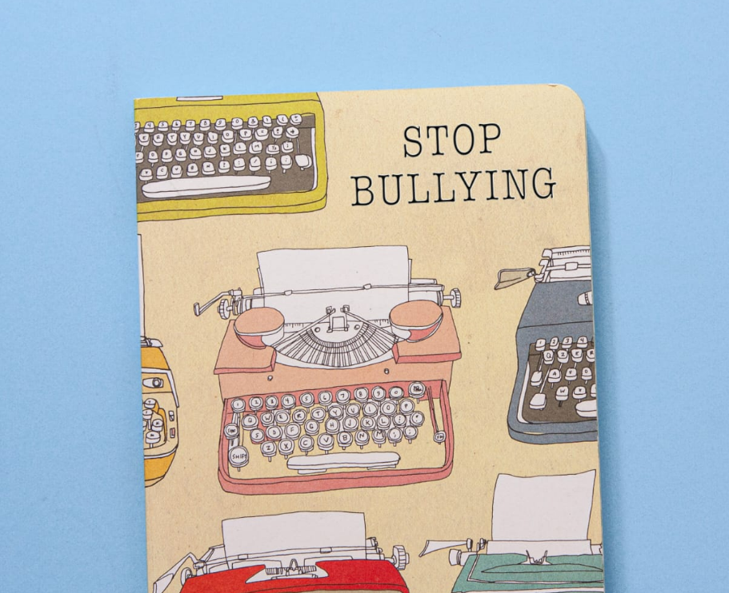

Breaking News
Quattordicenni accusano prof di "tortura psicologica"
Il professore ha tentato di fissare una verifica la settimana successiva: impossibile a causa della verifica di religione il giorno dopo.
Politica
 Politica
Politica
I due dell'ultimo banco dichiarano l'indipendenza e chiedono il passaporto.
Le fonti ufficiali definiscono la proposta "un'impropria ingiuria".

PoliticaStudenti chiedono 4 per aver scritto il nome e cognome correttamente
Tutta la classe protesta in solidarietà per il 2.

AnalisiIl 98% degli studenti scambierebbe il preside con una macchinetta del caffè che dà il resto.
Il restante 2% era assente il giorno del sondaggio.

PoliticaStudente ipotizza che potrebbe esistere un governo
Il consiglio studentesco si è attivato per ottenere maggiori informazioni su questa potenziale scoperta.
Tecnologia

SHOCKL'acquisto di un iPad Pro e di una Apple Pencil non trasferisce automaticamente la conoscenza della filosofia per osmosi.
I ricercatori hanno definito la scoperta "incredibile ed inaspettata".
Professore non trova il tasto Play, dichiarato stato di emergenza.
Essendo il tecnico malato, non ha concesso a nessuno di aiutare in quanto "non sufficientemente qualificato".
Email impiega 3 ore ad inviarsi: è record dell'istituto
Il WiFi della scuola non è mai stato tanto veloce da quindici anni.
Studente beccato a copiare il tema di italiano
Il metodo con cui è stato scoperto è inaspettato e mai visto, dicono gli esperti.
Cultura
Studente vede il preside e lo scambia per un perito dell'assicurazione venuto a stimare i danni.
"Somiglia a George Clooney", dice uno studente.

LibriStudente riesce a leggere un libro intero, record
Lo studente ha impiegato quattro anni per completare l'impresa.
«Seguite le vostre passioni», dice l'imprenditore che ha ereditato tre fabbriche di bulloni dal nonno.
Gli studenti hanno apprezzato la conferenza e l'hanno definita "illuminante".
Prof di storia dell'arte apre la bocca in gita, cinque morti
"Almeno passiamo tutti l'anno", dicono gli studenti in lacrime.
Gossip

OmicidioRappresentanti di classe lapidati per turni mal gestiti
"Se la sono cercata", dice il preside.
Prof di religione muore durante lezione
"Morta per cause naturali", dice la polizia. Erano 40 anni che urlava agli studenti di stare zitti.

BullismoBullo abbraccia primino, gli rompe una costola
I professori affermano che l'avvenimento "è un grande passo avanti per la lotta contro il bullismo".